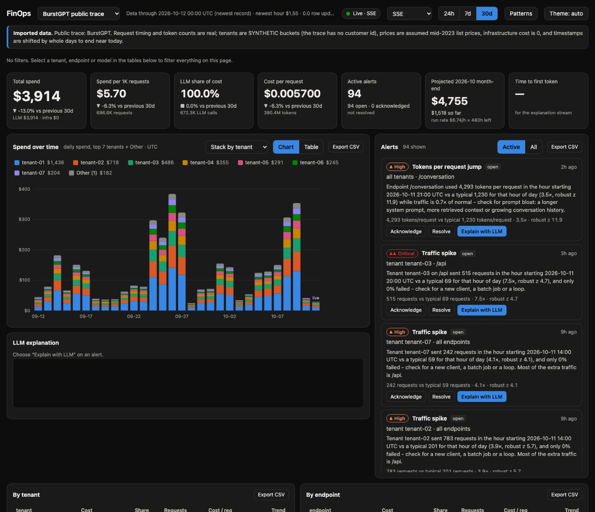

FinOps
Dashboard
Where every dollar of LLM and infra spend goes, per tenant, endpoint and call, streamed live.
tests, mutation-checked 42 ways
- 0npm dependencies. Hand-written WebSocket framing and SSE with real backpressure
- 1.43Mreal requests imported from the BurstGPT trace

live · /api/stream $0.0057/req
▲ Retry storm tenant-03 · /api · robust z 6.2